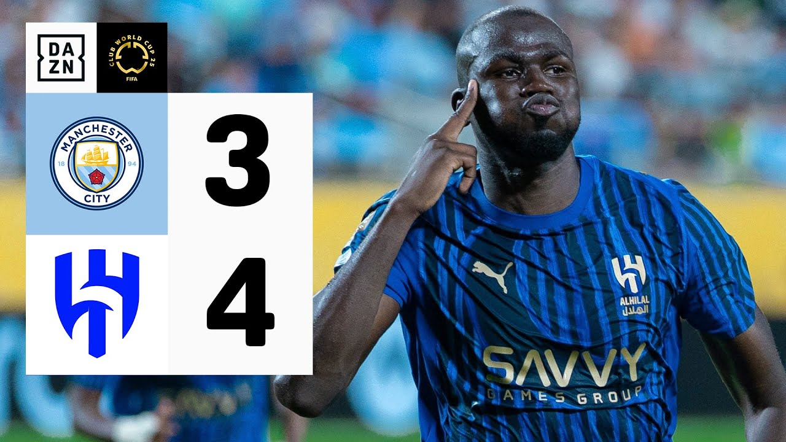

Al Hilal elimina al City en un partidazo 4-3
Al Hilal dio el gran golpe del torneo al vencer 4-3 al Manchester City en uno de los partidos más emocionantes del Mundial de Clubes FIFA 2025™. El héroe de la jornada fue Marcos Leonardo, quien firmó un doblete y el gol decisivo en la prórroga. Con esta histórica victoria, los saudíes se medirán ante Fluminense por un lugar en la semifinal.
El encuentro comenzó con intensidad desde el primer minuto. Bernardo Silva adelantó al conjunto inglés tras capturar un rebote en el área, y poco después, Savinho estuvo a punto de ampliar la ventaja, pero Yassine Bounou reaccionó de forma brillante. El Al Hilal no se amilanó y respondió con carácter: Marcos Leonardo y Malcom dieron vuelta al marcador con dos goles en apenas seis minutos del segundo tiempo.
Haaland empató para los Citizens tras un tiro de esquina, y aunque un penal a favor del Hilal fue inicialmente señalado, el VAR lo anuló por fuera de juego. En el tiempo suplementario, Koulibaly volvió a poner en ventaja al equipo árabe con un cabezazo, pero Foden igualó para el City. Cuando todo apuntaba a los penales, Marcos Leonardo apareció de nuevo para aprovechar un rebote de Ederson y firmar el 4-3 final.
El arquero Bounou, clave con varias intervenciones, y Al Lajami, que despejó un balón en la línea en el minuto final, fueron fundamentales en esta épica victoria. Al Hilal inscribió su nombre entre los candidatos y escribió una página dorada en su historia continental.